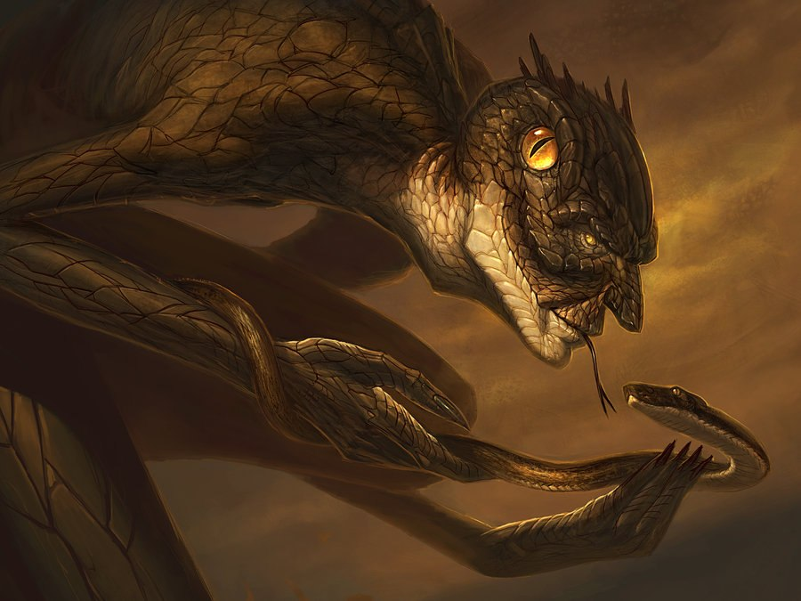

Индейцы, живущие в центральной и южной части Северной Америки, с давних времен знают, что к могущественному змеебогу и его ползучим отпрыскам следует относиться с почтением. Иначе можно Навлечь беду на себя и на все свое племя.
Ведь Йиг не просто один из Древних, обладающих великой магической силой, — а еще и известен непредсказуемым нравом. Обычно бы относится к людям благосклонно, особенно если те воздают должное его детям, но с приходом осени, когда змеи злятся от голода, зло обуревает и самого Йига. Змеебог становится свиреп и кровожаден, так что его приходится отгонять с помощью древних ритуалов. И поэтому с августа по октябрь в индейскйх поселениях все наряжаются, танцуют и бесконечно бьют в тамтамы, призывая на помощь Тираву, прародителя людей.
Страшнее же всего придется тому, кто по незнанию или лаже стремясь защитить себя, убьет хоть одну из гремучих змей, коих множество водится в тех краях. В этом случае Ииг принимается мстить, ибо ничего на свете он не любит так незабвенно, как свое ползучее потомство. Рано или поздно он является к обидчику сам — в облике крупного получеловека-полу- рептилии — и сначала хорошенько-измывается над. жертвой, а затем превращает в змею и ее, после чего та смирно примыкает к шипящей братии.
Впервые появляется в рассказе «Проклятие Йига» (The Curse of Yig, 1928), написанном Г. Ф. Лавкрафтом в соавторстве с Зелией Бишоп.
